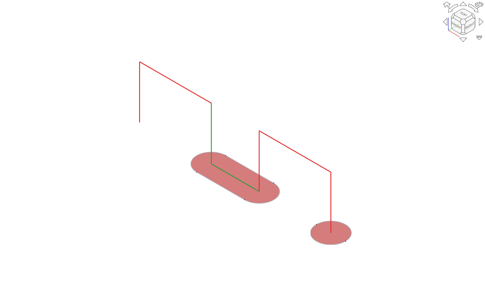
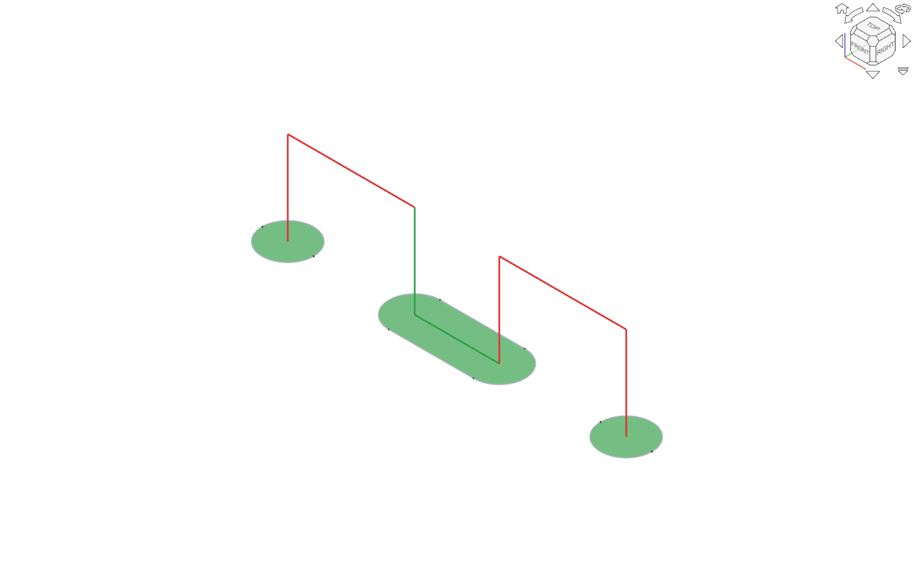
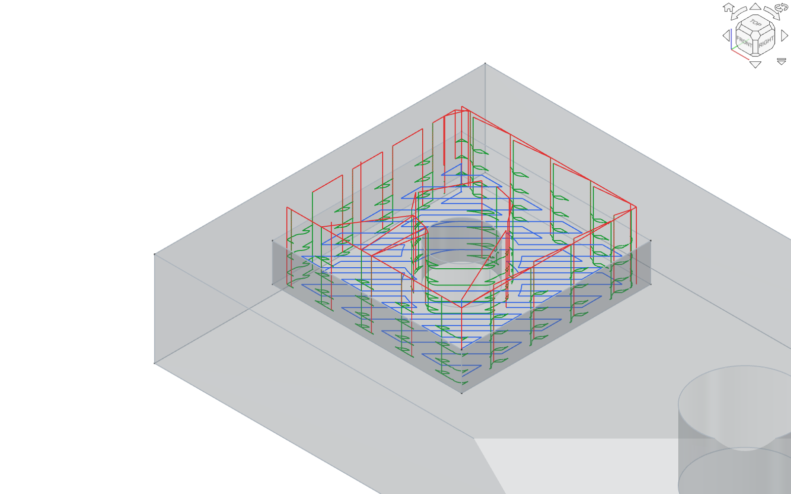

can you check that I did this backport/resolved the merge conflict sensibly, and that it still fixes the bug?
CAM unit tests with the PR applied: Ran 2185 tests · OK (skipped=13, expected failures=4)



AreaParams.h, its diff is line for line the same as #34330 on main. The conflict was resolved by keeping 26.3's own help text and making the same one-line move. Nothing was dropped and nothing extra came in.-D_GLIBCXX_ASSERTIONS abort in #34148. Such a move also cleared nothing. With the PR it clears a tool-sized circle. All four new tests fail on 26.3 and pass here, and the full CAM suite passes (2185 tests).Requester's question ("did I backport / resolve the conflict sensibly, and does it still fix the bug?"): yes to both, details below.
releases/FreeCAD-26-3 at d3513cc17df with the PR's single commit 280e32a2472 (cherry-pick of e046e64dd31) on top.git diff e046e64dd31~1 e046e64dd31 (the main merge) with git diff HEAD~1 HEAD (the backport), with index lines and hunk offsets stripped. The only differences are three context lines in src/Mod/CAM/App/AreaParams.h:
"'Edges' means separate to edges before Union. Clipper assumes wires are\n" "closed unless otherwise specified." and "Clipper operate on integers…""… ClipperLib seems to have an.\n" "urge to close open wires." and "ClipperLib operate on integers…"AREA_PARAMS_CLIPPER_FILL comes off the end of AREA_PARAMS_BASE and goes onto the end of AREA_PARAMS_CAREA. The resolution kept 26.3's wording, which is correct for a backport. All other files (App/Area.cpp, libarea/Area.cpp, Area.h, AreaClipper.cpp, pyarea.cpp, both test files) match exactly.The issue is an abort in TestPathAdaptive.testRestMachining under -D_GLIBCXX_ASSERTIONS. CArea::NaiveOffset called front() on an empty offset curve when the input curve had only zero-length segments. I ran the PR's own checks against a full 26.3 build (mainref, its own C++) and against the PR build:
| Check | 26.3 | PR |
|---|---|---|
| Thicken a one-point curve, r = 2 | 1 curve, 12.566 | 1 curve, 12.566 |
Thicken a zero-length segment (5,5)-(5,5), r = 2 |
0 curves (the empty-offset path) | 1 curve, 12.566 |
getClearedArea: plunge / plunge+retract / plunge+retract+plunge |
"no shape added" ×3 | 3.333 ×3 (the tool circle plus buffer) |
area.FillRule exists |
no | yes |
testRestMachining, test_thicken_point, test_thicken_zero_length, test_union_duplicate_circles and test_cleared_area_plunge_retract all pass. The full suite: Ran 2185 tests … OK (skipped=13, expected failures=4).std::list::front empty check, so it needs a patched-header rebuild. The 0-curve result above shows 26.3 still reaches that code; the PR no longer does.Cleared area with drill cycles and plunges, 6 mm tool, at three height limits (26.3 → PR, mm²):
| Height limit | G81 R2 | G83 R2 Q0.5 | Plunge + retract | Plunge only |
|---|---|---|---|---|
| Z 0 | 3.333 → 3.333 | 3.333 → 3.333 | error → 3.333 | error → 3.333 |
| Z 5 (above the R plane) | error → 3.333 | error → 3.333 | error → 3.333 | error → 3.333 |
| Z 20 | 3.333 → 3.333 | 3.333 → 3.333 | error → 3.333 | error → 3.333 |
At Z 5, 26.3 loses the drilled hole completely: the drill cycle adds an even number of identical circles and the old EvenOdd union cancels them. The fill-rule part of the PR (Positive in getClearedArea) fixes that too.
| Model | Ops | Result |
|---|---|---|
| pocket-island-variants (every Pocket pattern, Profile, MillFace) | 26 | identical |
| twp-test-block-job (adaptive, drilling, helix, profile, deburr, engrave, 4 work planes) | 16 | identical ("Face Top: No shape found at final depth" fails on both sides) |
| class-tray-A (multi-pass Profile, Lead In/Out, pocket) | — | identical |
| pocket-island + 3 mm rest-machining Pocket and Adaptive after the 6 mm ZigZag | 4 | rest Pocket only: 1325 → 1349 commands, feed 1803.93 → 1803.89 mm, same cycle time, matching points within 0.018 mm. Rest Adaptive identical. |
The rest-Pocket changes sit at the 6 mm roughing pass's plunge/retract spots: next to the island, near X38.98 Y35.44, and in the corner at X47 Y18. The PR now counts the tool there as cleared. Only arc splits change, by hundredths of a millimeter. The cleared-area polygons differ by a 0.001 mm² arc-fitting sliver.
I also added a Custom op that plunges a 3 mm tool into the four pocket corners. The rest pass still visits the corners on both builds. That is correct: the 6 mm roughing leaves scallops along the walls beyond each plunge circle, so the 3 mm tool still has to reach them.
/code-review medium 34536)The review raised 8 items. All are in the upstream commit as well. None survived checking:
SubjectFill now drives libarea's internal booleans (Negative empties a ZigZag pocket). Tested Path.Area.makePocket ZigZag and Offset with SubjectFill 0-3 on both builds: identical results, and Negative is empty on 26.3 too. Dropped.ClearedAreaSegmentVisitor enlarges the constructor parameter, not the member bbox. Unchanged code, also on 26.3. Dropped.OpenOffset land on one side only. This is the same output 26.3 already gives a single-point curve. Dropped.assertAlmostEqual with 7 places in the new test. Passes here and on main's CI. Dropped.Xor has no Python binding. It had none before either. Dropped.The PR text says only "backport of #34330". #34330's own text covers the NaiveOffset fix, the tests and "avoid generating zero-length segments when computing cleared area". These user-visible changes are not described in either:
SubjectFill setting (default NonZero) to libarea's internal unions and subtractions, which were hard-wired to EvenOdd. Tested: 44 default ops identical.SubjectFill property of Path Area objects (Path::FeatureArea) moves from the "Area" group to the "libarea" group. A file saved by 26.3 with SubjectFill = Positive opens with the value kept and recomputes to the same 64 edges. Tested.area module: new area.FillRule enum, and a fill= keyword on Area.Union, Subtract and Intersect. Tested (present, used by the new test).demo.mp4: the rest-machining test setup, then the same path's cleared area on 26.3 and on the PR.setup_rest_machining.png, main_cleared_area.png, pr_cleared_area.png.-D_GLIBCXX_ASSERTIONS build with list checks (see above).